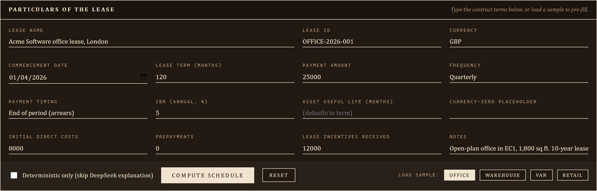
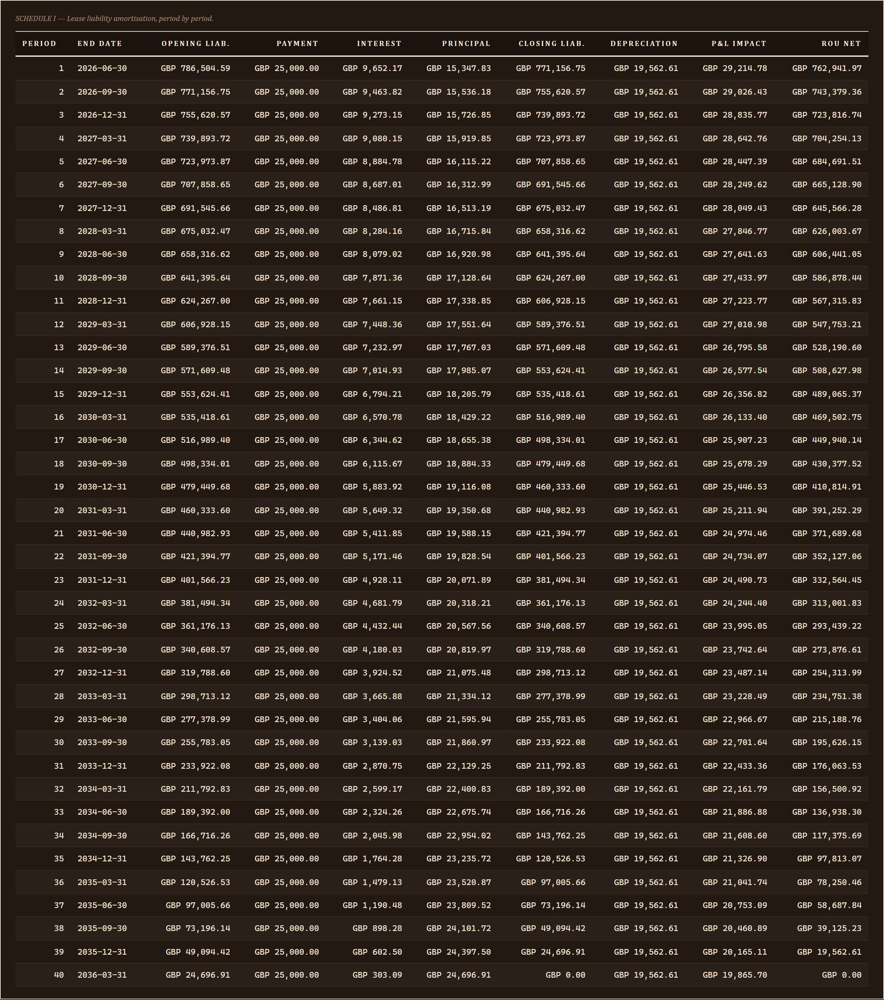

DAY 16 OF 30
IFRS 16 Calculator
Right-of-use asset and lease liability schedule
About the project
Full IFRS 16 calculation: ROU asset, lease liability, interest accrual, year-by-year schedule.
Local-only Flask web app and CLI that takes a lease contract (term + payment schedule + incremental borrowing rate) and produces the full IFRS 16 lessee output: right-of-use asset, lease liability amortisation, period-by-period interest + depreciation, P&L impact, balance-sheet impact, cash-flow split, and the maturity analysis required by IFRS 16.58. DeepSeek V4 explains each output line in plain English; deterministic fallback uses canned IFRS-16-accurate phrasing keyed off the actual numerics.
At a glance
- Standard
- IFRS 16 (lessee accounting), effective 2019
- Inputs
- Lease term + payment schedule + IBR (plus IDCs, prepayments, incentives, useful life)
- Outputs
- Lease liability + ROU asset + per-period amortisation + P&L + BS + cash flow + maturity analysis
- Model
- DeepSeek V4, single call (~$0.0005 per lease)
How it works
- Lease schema. lease_schema.py wraps the inputs in a typed LeaseInput dataclass.
- IFRS 16 maths. ifrs16_maths.py computes the present value of the lease payments at the IBR (annuity formula, ordinary or due based on payment timing).
- AI explainer. ai_explainer.py builds a digest (headline figures + 5 sample periods + year totals + maturity bands) and asks DeepSeek V4 for JSON: headline (one sentence, GBP cited), line...
- Dark cocoa library UI. Distinct from every prior day's warm-cream / pink / parchment / graph-paper / hi-vis / printer-white family.
- Excel + CSV exports. openpyxl writes a 7-sheet workbook (Summary + Schedule + P&L impact + Balance sheet + Cash flow + Disclosure note + Inputs).
AI integration
DeepSeek explains the journal flow
Limitations
- Single lease only. Multi-lease portfolio aggregation is post-30.
- No modifications. Term extensions, scope changes, payment changes that require IFRS 16.42 remeasurement are out of scope.
- No deferred tax. Timing differences between IFRS 16 and the tax treatment create deferred tax positions; not modelled.
- No indexation. CPI- / RPI-linked rent reviews + variable lease payments tied to an index require remeasurement; not in MVP.
- No published-prose disclosure note. We compute the numerical IFRS 16.51/53/58 disclosures + a checklist; the published narrative paragraph is post-30.
- Lessor accounting absent. IFRS 16 keeps an IAS 17-style operating / finance distinction for lessors.
Fun facts
- It builds the full schedule IFRS 16 demands: the right-of-use asset, the lease liability, and the interest unwinding year by year.
- The standard that put leases on the balance sheet, handled end to end.
Walk-through
- Cold start - Dark cocoa library aesthetic: deep cocoa ground (#221912), warm cream text, muted brown hairlines, brass-gold rules for...
- Compose region with sample loaded - Particulars of the lease pre-filled from the office sample.
- Headline ribbon + working-paper stamps - Four monolithic cells: lease liability at t=0 / ROU at t=0 / total P&L over term / year-1 P&L.
- Schedule I: lease liability amortisation - Period-by-period amortisation: opening liability, payment, interest, principal, closing liability, depreciation, P&L...
- Schedule II: P&L impact - Year-by-year interest + depreciation + total P&L impact.
- Schedule III: balance sheet - ROU asset net + total lease liability + current vs non-current split.
Screenshots



PORTFOLIO. / DAY 16
SAFWAN / SELECTED WORK